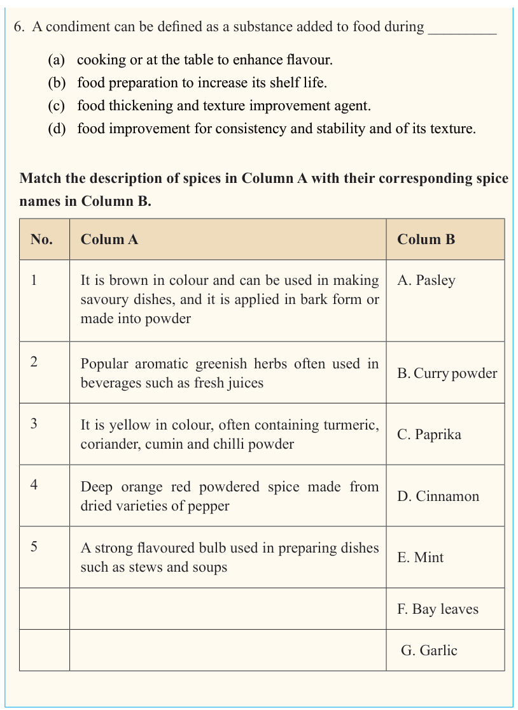

15


Food and Human Nutrition

Form Two

6. A condiment can be defined as a substance added to food during _________
(a) cooking or at the table to enhance flavour.
(b) food preparation to increase its shelf life.
(c) food thickening and texture improvement agent.
(d) food improvement for consistency and stability and of its texture.
Match the description of spices in Column A with their corresponding spice names in Column B.
No.
Colum A
Colum B
1
It is brown in colour and can be used in making
savoury dishes, and it is applied in bark form or made into powder
A. Pasley
2
Popular aromatic greenish herbs often used in
beverages such as fresh juices
B. Curry powder
3
It is yellow in colour, often containing turmeric,
coriander, cumin and chilli powder
C. Paprika
4
Deep orange red powdered spice made from
dried varieties of pepper
D. Cinnamon
5
A strong flavoured bulb used in preparing dishes
such as stews and soups
E. Mint
F. Bay leaves
G. Garlic
17/09/2025 16:30